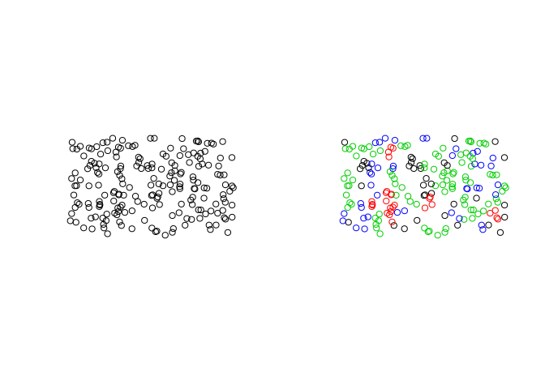
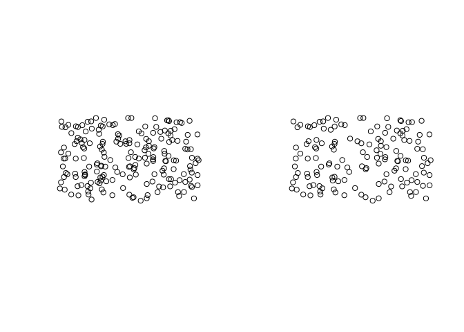

The goal of declusteringr is to declustering spatial data. This package offers support for sf spatial objects.
Installation
You can install the released version of declusteringr from CRAN with:
Examples
This is a basic example of cell declustering:
library(declusteringr)
points4 = sf::st_read(system.file("points/punkty4.shp", package = "declusteringr"))
#> Reading layer `punkty4' from data source `C:\Users\Lenovo\Documents\R\win-library\3.6\declusteringr\points\punkty4.shp' using driver `ESRI Shapefile'
#> Simple feature collection with 200 features and 1 field
#> geometry type: POINT
#> dimension: XY
#> bbox: xmin: -1.032267 ymin: -0.1410416 xmax: 0.09442347 ymax: 0.5297012
#> epsg (SRID): 4326
#> proj4string: +proj=longlat +datum=WGS84 +no_defs
x = gridWeighted(spatial_object = points4, cellsize = 0.09)
#> although coordinates are longitude/latitude, st_intersects assumes that they are planar
x
#> Simple feature collection with 200 features and 5 fields
#> geometry type: POINT
#> dimension: XY
#> bbox: xmin: -1.032267 ymin: -0.1410416 xmax: 0.09442347 ymax: 0.5297012
#> epsg (SRID): 4326
#> proj4string: +proj=longlat +datum=WGS84 +no_defs
#> First 10 features:
#> id row.id col.id received_weights lengths
#> 157 0 77 1 4.545455 2
#> 128 1 64 2 3.030303 3
#> 140 2 71 3 1.298701 7
#> 4 3 3 4 3.030303 3
#> 173 4 83 5 3.030303 3
#> 141 5 71 6 1.298701 7
#> 187 6 94 7 4.545455 2
#> 110 7 53 8 3.030303 3
#> 152 8 75 9 3.030303 3
#> 43 9 25 10 2.272727 4
#> geometry
#> 157 POINT (0.005593351 0.392986)
#> 128 POINT (-0.01407625 0.280163)
#> 140 POINT (-0.4931845 0.3204552)
#> 4 POINT (-0.7998737 -0.09106148)
#> 173 POINT (-0.6024538 0.4721198)
#> 141 POINT (-0.4999889 0.3408532)
#> 187 POINT (-0.8074892 0.4988539)
#> 110 POINT (-0.9635923 0.2408171)
#> 152 POINT (-0.1446985 0.3359325)
#> 43 POINT (0.03232037 -0.02043053)Plot input data and weighted points:

gridWeighted is adding columns row.id - the cell’s number, col.id - the point’s number, received_weights - the weight of each cell and lengths - amounts of each points in cell. gridWeighted does not change amount of features. Weights are calculated according to this pattern:

where ni is the number of samples in the cell in which sample j is located and n is the total number cells with samples.
This is basic example of random declustering:
y = gridRandom(spatial_object = points4, cellsize = 0.09 , numpoint = 2)
#> although coordinates are longitude/latitude, st_intersects assumes that they are planar
y
#> Geometry set for 144 features
#> geometry type: POINT
#> dimension: XY
#> bbox: xmin: -1.032267 ymin: -0.1410416 xmax: 0.08642316 ymax: 0.5297012
#> epsg (SRID): 4326
#> proj4string: +proj=longlat +datum=WGS84 +no_defs
#> First 5 geometries:
#> POINT (-0.9933803 -0.05165088)
#> POINT (-0.881981 -0.09763874)
#> POINT (-0.9401051 -0.09067107)
#> POINT (-0.8030895 -0.0664513)
#> POINT (-0.7750732 -0.1312637)Plot input data and data after random declustering:

gridRandom is choosing random features by specifying some parameters. gridRandom can change amount of features.